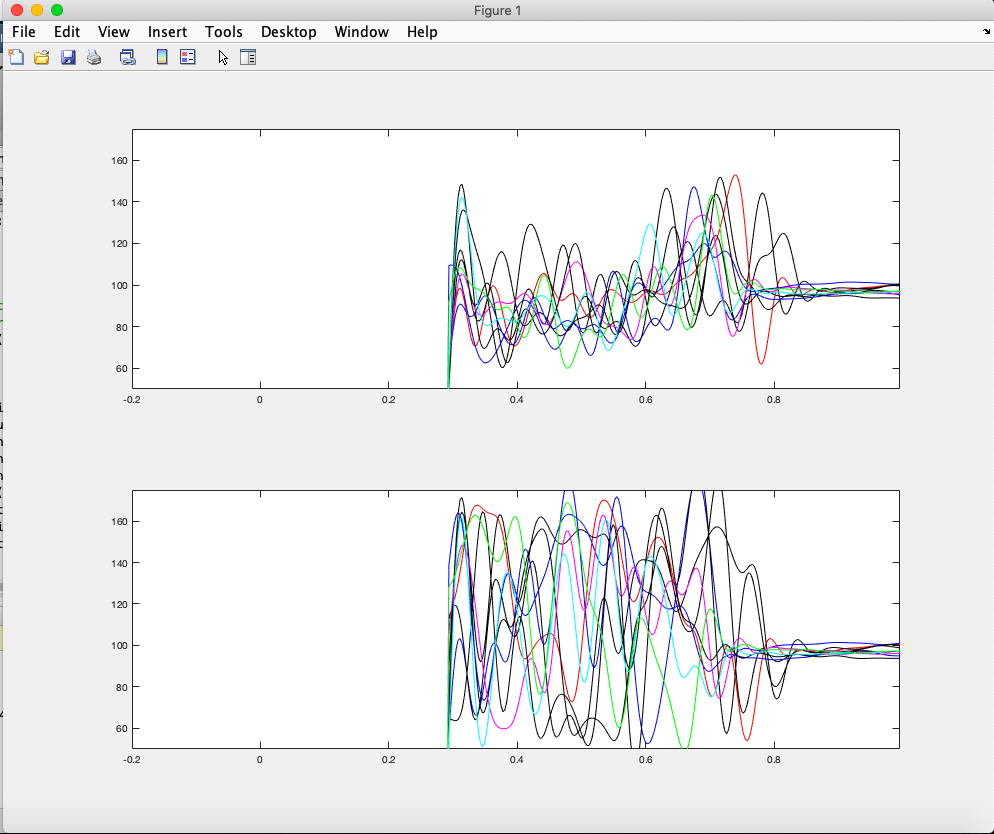

Research
I have been a part of clinical research in my medical missions to the Phillipines for the last 3 summers and in my internship at UCSF's Biomagnetic Imaging and Speech Neuroscience Labs last summer.
UCSF

As a research intern at UCSF last summer, I programmed a speech perturbation analysis pipeline to study the auditory feedback processing of individuals with Alzheimer’s, Autism, and Spasmodic Dysphonia. In particular, I researched the effects of 16p11.2 chromosomal deletion (~600 kb), one of the most common genetic etiologies of ASD and other neurodevelopmental disorders. We used high-resolution magnetoencephalographic imaging (MEG-I) to define with millisecond precision the underlying neurophysiological signature of motor impairments for individuals with 16p11.2 deletions. My analysis of their auditory feedback combined with their levels of beta suppression in the MEG scans provided a neurophysiological phenotype for the clinical presentation of the 16p11.2 chromosomal deletion. This research has improved our scientific understanding of how genetic variation impact neural oscillatory dynamics which is key for creating specific therapies to reduce symptoms of Autism. In addition to the speech perturbation research, I used multiple bioinformatic software applications to translate FMRI and MEG data into 3D head models used in frameless stereotaxy to help neurosurgeons plan and conduct their surgeries.
My research on ASD was espescially important to me because my Boy Scouts Troop encourages the participation of children with ASD. Our troop has individuals who are almost "normal" to those who are very sensitive. By interacting and becoming friends with troop-mates that had ASD, I recognized how similar we were. We shared the same motivation to stay awake at night playing video games, the same thrill of racing each other in the pool, and the same stress of homework. I realized that individuals with ASD are a unique group of individuals that can greatly benefit society, but their talents are often overlooked because of their behavioral and communication challenges.
I am proud because my research was an important step in making the community even better. I clearly remember helping a brave five-year-old, get situated in the MEG. My analysis of his auditory feedback combined with MEG scans provided proof of the importance of the 16p11.2 chromosomal region in social interactions. Using this knowledge in the future, I hope to prevent the effects of ASD and help my friends with unique sensitivities to function with less stress and contribute their talents to society with greater ease.
Researching the efficacy of Telemedicine
I conducted a research project to assess the benefits of telemedicine intervention in rural barangays (villages) in the Philippines. In developing countries, telemedicine has been effective at increasing access to certain subspecialty care, but there is a paucity of studies demonstrating the successes of telemedicine in increasing primary care access. I used telemedicine as a tool to help practitioners and policy leaders move beyond the standard diagnosis and treatment approach to focus on broad community health goals. I aimed to (1) implement a simple to use, cost-effective telemedicine intervention, (2) train community health workers who can facilitate its use in rural barangays (villages) and (3) assess the benefits of telemedicine in improving patients’ health. The research study was approved by Stanford’s IRB. Over the last two summers, I taught medical students and barangay health workers how to use the telemedicine application to send reports of each patient to physicians on a weekly basis. The telemedicine application has allowed physicians to provide chronic disease management and help patients at risk prevent heart attacks, strokes, and kidney failure. This past summer, I also presented our telemedicine application and findings thus far of the benefits of telemedicine to the Deans of Medical Schools, Directors of Hospitals, and government officials in the Philippines to get them on board. We are analyzing the benefit of the telemedicine intervention by comparing the control of chronic diseases in patients and the average number of medical emergencies in each barangay before and after.
Here is the video and presentation that I used to present my telemedicine project to medical professionals in the US and in the Philippines.
Diabetes and Hypertension Research in Philippines

I conducted a clinical study of the life-styles of diabetic patients that visited our mobile clinic. The investigation also included a cost-benefit analysis of local produce that could be incorporated into a patient’s diet. The findings of the study were presented to the Deans of Medical Schools in the Philippines and guided our creation of educational presentations and pamphlets that encouraged patients to consume an inexpensive, healthy diet and to exercise regularly. During my medical mission trips to the Philippines, I found that 60 to 70% of the patients had hypertension and 40 to 50% diabetes. On conducting further research on the daily lifestyles of the patients at our mobile clinics, I learned that it was due to consuming a diet very high in LDL cholesterol, sodium, and triglycerides along with a lack of physical exercises. A comparison of 10 countries in the Asia-Pacific region has revealed that the Philippines had the lowest health expenditure, making adequate and timely health care inaccessible for people living in rural areas. To combat this, we started a clinical research study to evaluate the effects of incorporating a healthy diet and exercise in the prevention of chronic diseases like hypertension and diabetes. Research subjects were involved in a 6-month pilot program and provided education on incorporating locally available produce and physical activity in their daily routine. We organized interactive cooking sessions and Zumba classes in the barangays. Subjects kept a diet and physical activity diary that was reviewed along with their blood pressure, and blood glucose levels. Our findings indicated improved stability among patients with chronic diseases and a substantial decrease in the number of emergencies. The findings of the study were presented to the Deans of Medical Schools and government officials in the Philippines to help shape local, national, and global health policies. I hope this study will help the development of culturally sensitive and sustainable educational programs that will prevent the progression of these chronic diseases.
*To learn more about my research experiences, contact me below.